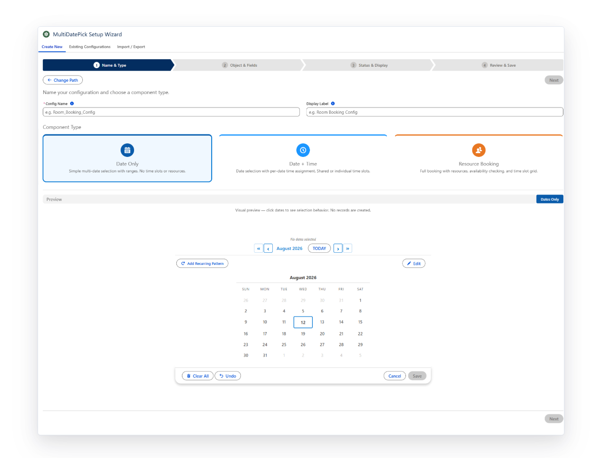
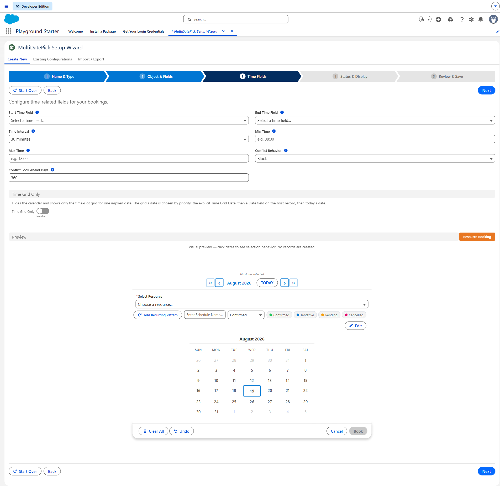
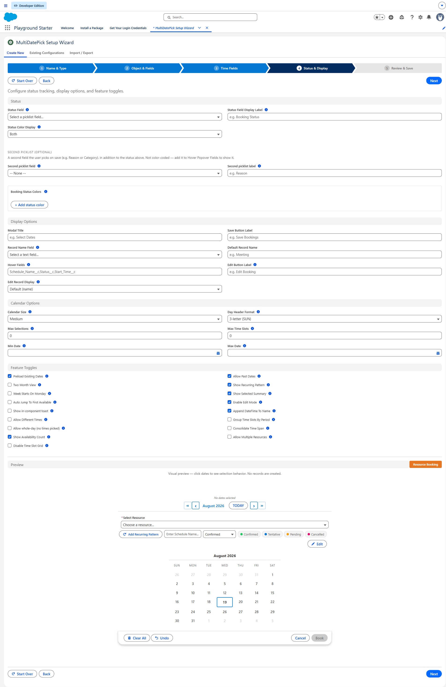
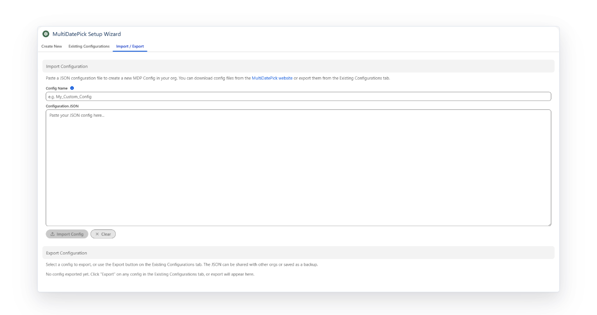

Configuring a Salesforce Calendar Without Writing Code
Sixty-plus properties sounds like a project. It is a wizard, three questions, and a live preview that shows you the calendar before you save anything.
Most Salesforce components with real depth make you learn them twice: once to understand the properties, once to remember which combination you picked last time. The Setup Wizard exists so you do neither. It asks what you are scheduling, writes the configuration as metadata, and hands you a name you can reference anywhere.
Two ways in, depending on what you already know
The wizard opens on three paths, and picking the right one saves the most time.
Walk me through it
Three questions about what you are scheduling. Best when you know the business problem but not the property names.
Configure all properties
The full form with every option and a live preview. Best when you know exactly what you want.
Existing configurations
Your saved configs, listed with their component type and description. Best when you are cloning something that already works.

The three questions that decide everything
The guided path asks about the shape of the records you want, not about properties. Every answer combination is valid, and together they determine what the component writes:
- Do you need times, or just dates? Dates alone, a time on each date, or a parent block with sub-blocks for the gaps inside it.
- Are you booking a resource? None, one at a time, or several at once.
- Should consecutive dates collapse into a range? One record per date, or one record with a start and an end.
Three questions, and the answers are independent, so they describe the whole grid of possibilities rather than a menu of presets. Monday through Friday for six weeks can be thirty records or six, and that is a deliberate choice you make here rather than a limitation you discover later.

A live preview, before anything is saved
The preview pane renders a working calendar underneath the form as you change properties. Turn on two-month view and it appears. Add status colors and the cells fill. It is the actual component, not a mockup, so what you approve is what you deploy.
This matters more than it sounds. The expensive mistakes in scheduling configuration are not typos, they are shape decisions you cannot see until real records exist. Seeing the calendar respond while you are still deciding removes most of that risk.

Inside the tabs: Time Fields and Status & Display
Two tabs do most of the heavy lifting on a booking or scheduling config. The Time Fields step maps the start-time, end-time, and interval fields your calendar needs; the Status & Display step is where the visual polish lives, from status-driven cell colors to which fields show on hover.

Status & Display is the tab where a working calendar becomes a calendar admins actually want to use. Pick a status field, map colors to each status value, choose whether the color paints the calendar cell, the time-slot grid, or both. Add hover fields so mousing over a booking previews the details.

What it actually writes
Saving does not embed settings in a page. It deploys a Config__mdt Custom Metadata record. That has three consequences worth understanding:
- It is deployable. Custom Metadata moves through your normal release pipeline, sandbox to production, like any other component.
- It is reusable. Set
configNameon any component instance and it picks up the whole configuration. One config, many placements. - It stays in your org. Nothing is stored on a vendor server, so the configuration is yours and it is visible in Setup.
Import, export, and the mapping step people miss
The Import / Export tab takes a JSON configuration and turns it into a saved config. That is how the config library works: thirty-seven pre-built configurations covering time-off requests, room booking, hot-desking, interview scheduling, fleet reservation and more.
The step that saves the most time is Smart Field Mapping. Library configs reference the demo objects, and your org has its own. Rather than making you rewrite the JSON, the wizard shows the referenced object and field names and lets you remap them to yours before deploying. Import, remap, save.

Export works the same way in reverse, which makes configurations shareable. A config that works in one org is a paste away from working in another.
Using the config once it exists
Drop any of the three components onto a Lightning record page, app page, home page, or Experience Cloud site, set configName to the name you chose, and leave every other property blank. The config supplies them.
The same applies inside a Screen Flow, with one caveat that catches people: set Boolean properties explicitly with $GlobalConstant.True or $GlobalConstant.False. A blank Boolean in Flow is null rather than false, and the component cannot tell the difference between "off" and "never set."